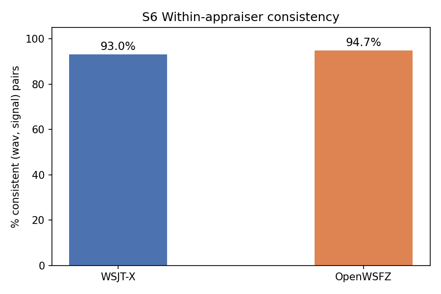
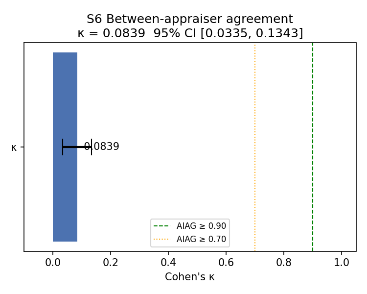
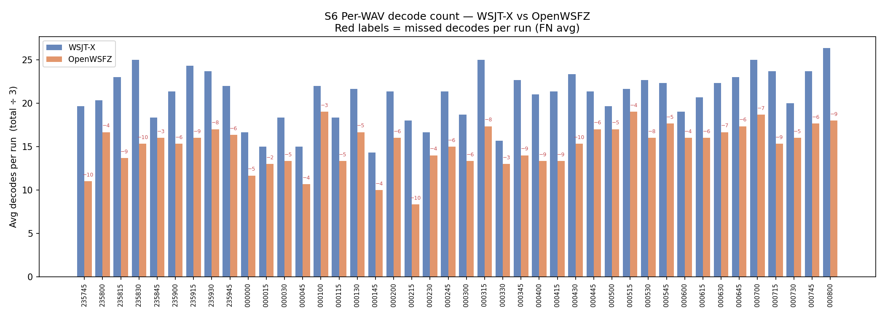
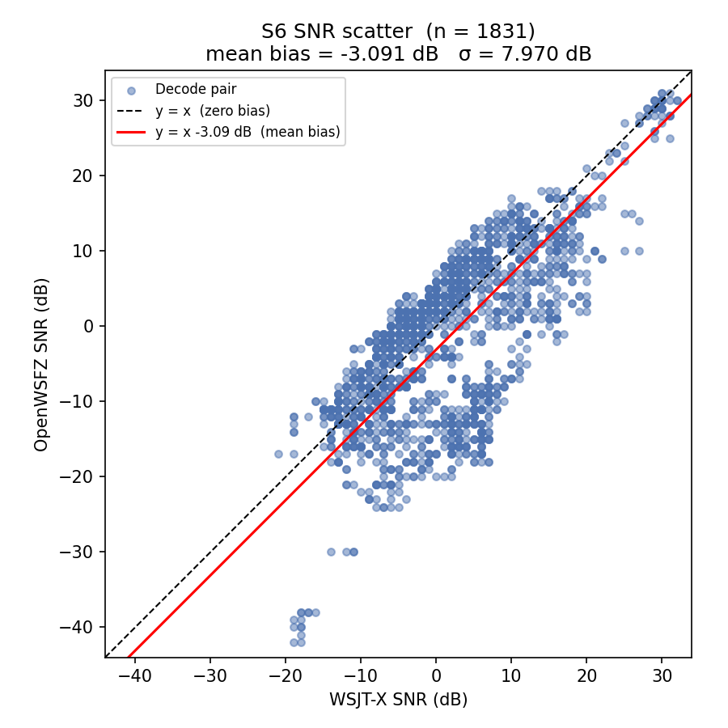

What this study tests: S6 validates two hypotheses by replaying a corpus of off-air WAV recordings through a shared virtual audio device. Unlike S1–S5 which use GFSK-synthesised signals, the corpus source material contains real FT8 traffic captured from the 20 m band; the test apparatus is nonetheless synthetic throughout (VB-CABLE replay — neither decoder receives live RF during the study).
Conditions: 42 off-air 20 m FT8 WAV recordings (~10 minutes of live 20 m activity, 2026-05-28/29), each replayed K=3 times in independently randomised order through VB-CABLE. Both appraisers captured simultaneously (crossed design). No injected noise; no GFSK-synthesised signals. Source WAVs contain real callsigns and are git-ignored per NFR-021.
Defects under validation: D-002 (SNR bias — shim constant fix). D-001 (decode gap) is monitored informally; no acceptance threshold is set pending a fix.
| Field | Value |
|---|---|
| Run date | 2026-06-11 |
| OpenWSFZ SHA | unknown |
| WSJT-X version | WSJT-X 2.7.0 |
| Corpus | 42 off-air 15-second WAV files (20 m FT8, 2026-05-28/29) |
| Runs (K) | 3 (independently randomised presentation order per run) |
| Signal universe | Union of all signals decoded by either appraiser in any run |
| Total (WAV, signal, run) observations | 2799 |
| Variables measured | Decode decision (binary); SNR (dB, matched pairs only) |
Acceptance thresholds (STUDY-SPEC §10 / NFR-023):
| Metric | Threshold | Source |
|---|---|---|
| Between-appraiser κ | ≥ 0.90 (PASS) / ≥ 0.70 (conditional) | AIAG attribute study |
| Within-appraiser consistency | ≥ 90% | AIAG attribute study |
| SNR bias (mean delta) | ±2.0 dB | spec §SNR accuracy / D-002 |
| SNR spread (σ of delta) | ≤ 4.0 dB | D-004 acceptance criterion |
| OpenWSFZ decode rate vs WSJT-X | — | Informational (D-001 pending fix) |
A (WAV, signal) pair is consistent if the decode decision is identical across all K runs for that appraiser. Measures measurement system stability, not agreement between appraisers.
| Appraiser | (WAV, signal) pairs | Consistent | % Consistent | Verdict |
|---|---|---|---|---|
| WSJT-X | 933 | 868 | 93.0% | PASS |
| OpenWSFZ | 933 | 884 | 94.7% | PASS |

Measures how much more often the two appraisers agree than would be expected by chance alone. Landis-Koch (1977) scale: < 0.20 Slight, 0.20–0.40 Fair, 0.40–0.60 Moderate, 0.60–0.80 Substantial, ≥ 0.80 Almost perfect.
κ = 0.0839 (95% CI [0.0335, 0.1343]) — Slight [FAIL]
AIAG thresholds: κ ≥ 0.90 = acceptable; κ ≥ 0.70 = conditionally acceptable; κ < 0.70 = unacceptable. The gap is driven almost entirely by Section 3 (missed decodes — D-001).
| WSJT-X decoded | WSJT-X not decoded | |
|---|---|---|
| OpenWSFZ decoded | 1831 (TP) | 78 (FP) |
| OpenWSFZ not decoded | 795 (FN) | 95 (TN) |

Informational — no pass threshold is set pending a D-001 fix. Establishes the real-world decode gap baseline.
OpenWSFZ decoded 1,831 of the 2,626 signals found by WSJT-X (69.7%). 795 signals were decoded by WSJT-X but missed by OpenWSFZ (30.3%).
| WAV | WSJT-X avg | OpenWSFZ avg | Missed avg | OpenWSFZ rate |
|---|---|---|---|---|
| 260528_235830.wav | 25.0 | 15.3 | 10.3 | 59% |
| 260529_000430.wav | 23.3 | 15.3 | 10.0 | 57% |
| 260528_235745.wav | 19.7 | 11.0 | 9.7 | 51% |
| 260529_000215.wav | 18.0 | 8.3 | 9.7 | 46% |
| 260529_000800.wav | 26.3 | 18.0 | 9.3 | 65% |
| 260528_235815.wav | 23.0 | 13.7 | 9.3 | 59% |
| 260529_000415.wav | 21.3 | 13.3 | 9.0 | 58% |
| 260529_000715.wav | 23.7 | 15.3 | 9.0 | 62% |
| 260528_235915.wav | 24.3 | 16.0 | 8.7 | 64% |
| 260529_000400.wav | 21.0 | 13.3 | 8.7 | 59% |

Mean SNR delta (OpenWSFZ − WSJT-X) = -3.091 dB (threshold ±2.0 dB) [FAIL]
σ = 7.970 dB (threshold ≤ 4.0 dB) [FAIL]
n = 1,831 matched decode pairs (both appraisers decoded the same signal)
Positive delta = OpenWSFZ reports higher SNR than WSJT-X. The synthetic single-signal S1 baseline (run 0682106) returned +1.78 dB mean — within threshold. This corpus replay uses off-air WAV recordings replayed through VB-CABLE; the sign reversal and wider spread relative to S1 may reflect multi-signal waterfall congestion, D-003 intermittent events, or a density-dependent bias in the shim constant (D-004).

Spearman ρ between WAV presentation slot rank and per-WAV decode count. A significant result (p < 0.05) would indicate session-state carryover (e.g. decoder warm-up artefacts, ALL.TXT accumulation). No effect expected in a correctly executed corpus replay.
WSJT-X: No order effect detected — Spearman ρ = 0.0132, p = 0.8833.
OpenWSFZ: No order effect detected — Spearman ρ = 0.033, p = 0.7136.
| Metric | Value | Threshold | Verdict |
|---|---|---|---|
| Within-appraiser consistency (WSJT-X) | 93.0% | ≥ 90% | PASS |
| Within-appraiser consistency (OpenWSFZ) | 94.7% | ≥ 90% | PASS |
| Between-appraiser κ | 0.0839 | ≥ 0.70 | FAIL |
| OpenWSFZ decode rate vs WSJT-X | 69.7% | — (informational) | — |
| SNR bias (mean delta) | -3.091 dB | ±2.0 dB | FAIL |
| SNR spread (σ) | 7.970 dB | ≤4.0 dB | FAIL |
Overall verdict: FAIL
ft8_decode_all call; WSJT-X is believed to use PCM-domain iterative SIC. Recommended next step: implement sub-Hz carrier re-estimation and PCM waveform subtraction (p15 second-pass infrastructure is the natural extension point). Re-run S6 corpus replay after any fix; target κ ≥ 0.70 and decode rate ≥ 85%.noise_floor_db; (b) D-003 intermittent signal_db collapse contaminating the distribution; (c) SNR constant mismatch at real-world signal density. Recommended next step: log signal_db and noise_floor_db per decode on a live session to distinguish hypotheses (a) and (b). GitHub issue #12.signal_db collapse ~15 dB) embedded within the 1,831 matched pairs. Recommended next step: mine the raw run_manifest.json for outlier pairs (|delta| > 10 dB) to quantify D-003 event rate in the field corpus. GitHub issues #11 (D-003) and #12 (D-004).Callsigns scrubbed per NFR-021. Real callsigns replaced with [CALL] before commit.